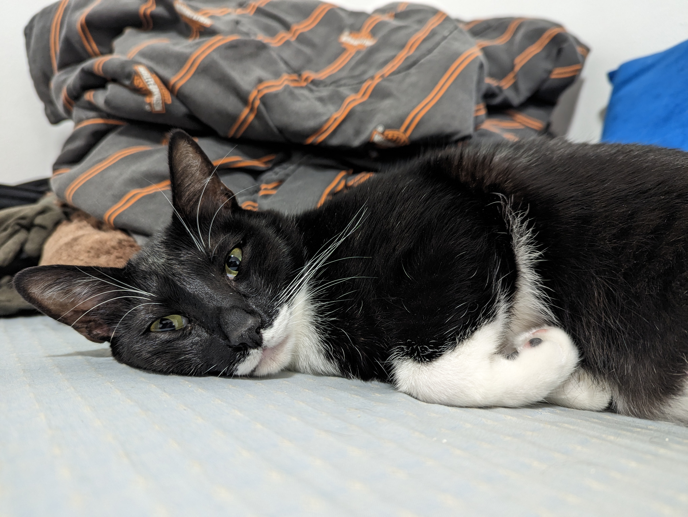

Click here for more information about the lions
Cats were venerated in ancient Egypt, but there may have been instances of domestication as early as the Neolithic from around 9,500 years ago (7500 BC).
Did you know that, The felids are a rapidly evolving family of mammals that includes:
Media
| Characteristics | Behavior |
|---|---|
| The lion is a muscular, deep-chested cat with a short, rounded head, a reduced neck and round ears. | Lions spend much of their time and resting, and are inactive for about 20 hours per day. |